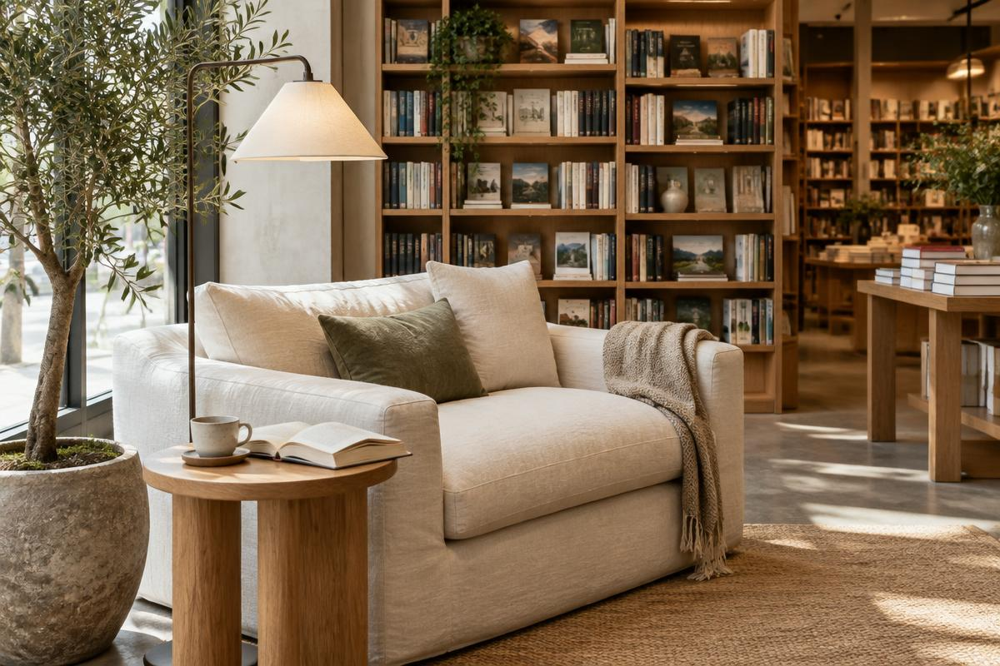
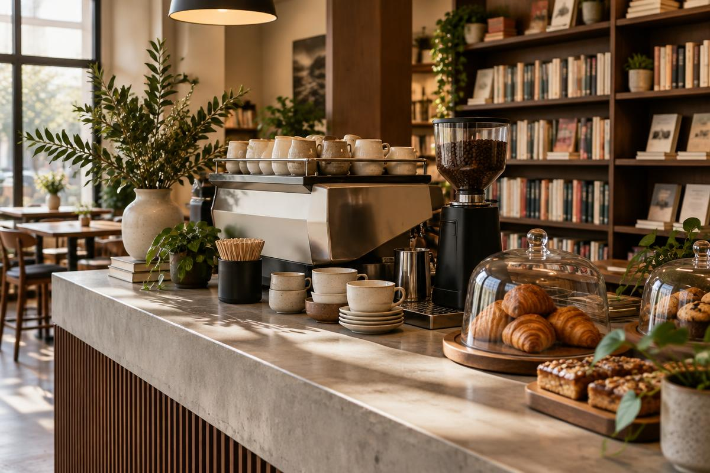

Księgarnia
Literatura, sztuka, fotografia, design, magazyny i wydawnictwa niezależne. Plakaty lokalnych artystów wiszą na ścianie.
Przeglądaj książki →O nas
Najciekawsze rzeczy dzieją się często na marginesie — w notatkach, dopiskach i rozmowach po godzinach.

MARGINES powstał z prostej potrzeby: chcieliśmy miejsca, w którym książka nie jest tylko towarem, a kawa — tylko napojem. Zaczęliśmy od jednego regału i ekspresu, dziś prowadzimy księgarnię, kawiarnię i program spotkań.
Książki wybieramy ręcznie: literaturę, sztukę, fotografię, design, magazyny i wydawnictwa niezależne. Obok leżą plakaty i risografie lokalnych artystów.
Kawę bierzemy od małych palarni i parzymy uważnie. Do tego domowe słodkości i stolik, przy którym możesz czytać tak długo, jak chcesz.
Pod jednym dachem
Zacznij od regału, zostań na kawę, wróć na spotkanie.
Literatura, sztuka, fotografia, design, magazyny i wydawnictwa niezależne. Plakaty lokalnych artystów wiszą na ścianie.
Przeglądaj książki →Bar z ekspresem, wypieki z lokalnej piekarni i stoliki między regałami. Książkę z półki możesz przejrzeć przy kawie.
Zobacz menu →Kluby, rozmowy z twórcami i godzina czytania w ciszy. Stałe spotkania mają wstęp wolny, wystarczy przyjść.
Kalendarz wydarzeń →
Kawiarnia
Rano słychać młynek i szelest gazet, wieczorem — rozmowy po spotkaniach autorskich. Parzymy uważnie i nie poganiamy.
Nasze zasady
Każdy tytuł na półce trafił tam świadomie.
Promujemy niezależnych wydawców i zinów.
Nikt nie wyprosi Cię znad książki.
Współpracujemy z małymi palarniami i parzymy uważnie.
Na naszej ścianie wiszą grafiki i risografie lokalnych artystów.
Kluby, rozmowy z twórcami i godzina czytania w ciszy.
Spotkania
Na kanapie dzieje się najwięcej. Wstęp wolny, wystarczy przyjść.
Raz w miesiącu czytamy jedną książkę i rozmawiamy o niej przy kawie. Listopad: „Terakota”.
Luźne rozmowy po angielsku na kanapie. Każdy poziom mile widziany.
Kameralne spotkania z twórcami: pisarkami, ilustratorami i ludźmi z branży kreatywnej.
Godzina wspólnego czytania w ciszy — telefony do koszyka, kawa w dłoń.
Pozostałe wydarzenia, takie jak spotkania autorskie i warsztaty, znajdziesz w kalendarzu.
Zanim przyjdziesz
Tak. Każdą książkę z półki możesz przejrzeć przy stoliku, nikt nie będzie Cię poganiał.
Stałe spotkania na kanapie mają wstęp wolny — wystarczy przyjść.
Stół na 10 osób rezerwujemy dla klubów książki i małych spotkań. Napisz do nas.
Nie, mleko roślinne podajemy bez dopłaty.
Pon–Pt 8:00–20:00, sobota 9:00–20:00, niedziela 10:00–18:00.
Odwiedź nas
MARGINES to fikcyjna marka stworzona na potrzeby projektu zaliczeniowego.